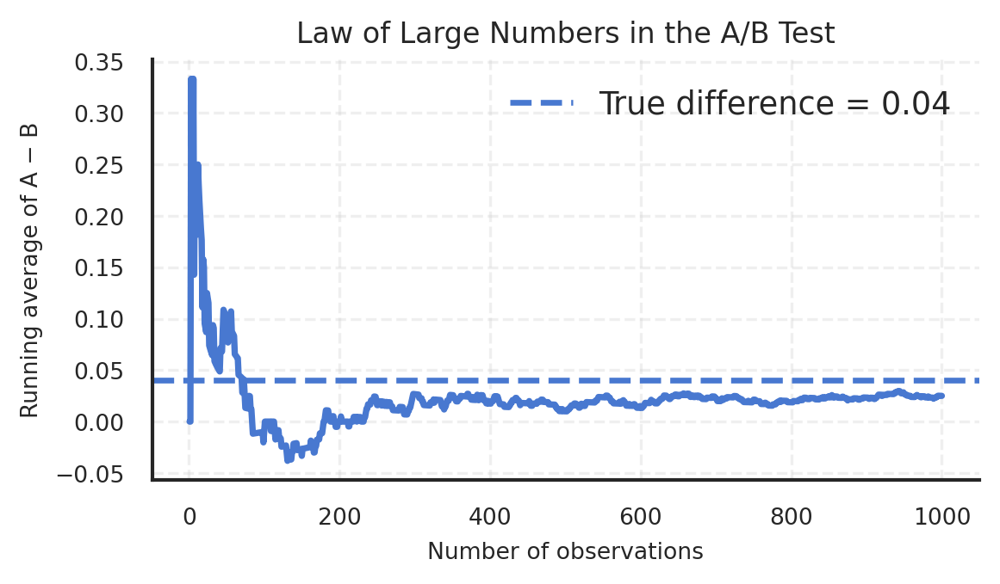
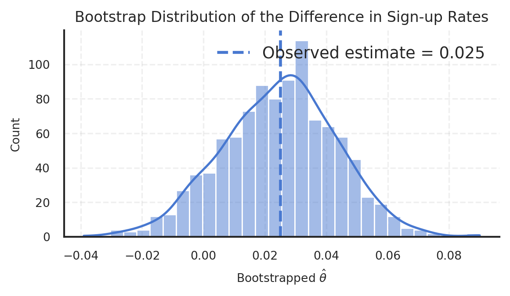
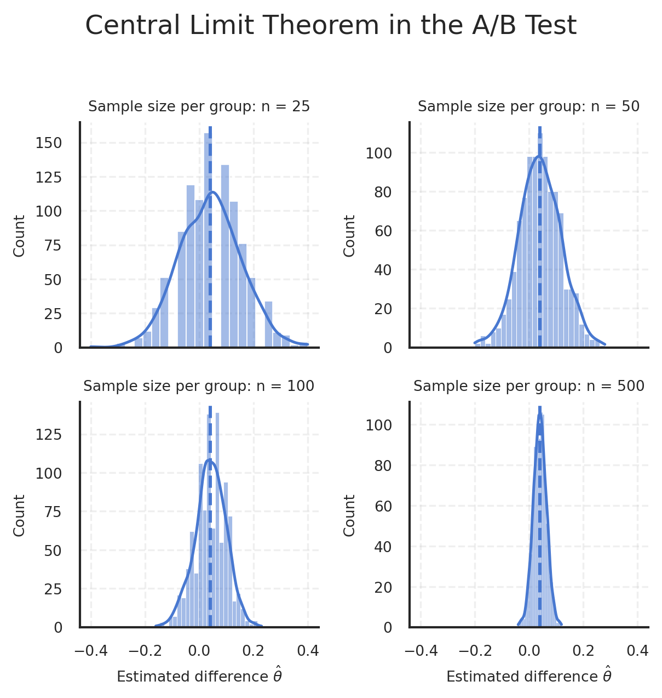
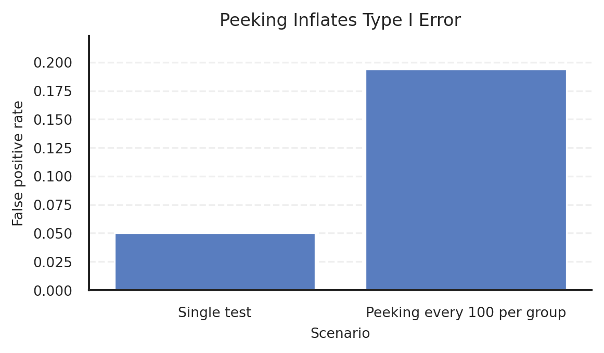

n_a = 1000
n_b = 1000
pi_a = 0.22
pi_b = 0.18
theta_true = pi_a - pi_b
cta_a = rng.binomial(n=1, p=pi_a, size=n_a)
cta_b = rng.binomial(n=1, p=pi_b, size=n_b)
df_ab = pd.DataFrame(
{
"group": (["A"] * n_a) + (["B"] * n_b),
"signup": np.concatenate([cta_a, cta_b]),
}
)A/B Testing a Call to Action
Simulating Key Ideas from Classical Frequentist Statistics
Introduction
In MGTA495 Marketing Analytics, we are asked to build our own website. That makes the setting of this homework unusually practical: suppose my site includes a landing page where visitors can subscribe to a newsletter. A small change in wording may look trivial, but in digital products, seemingly minor interface choices often affect behavior in measurable ways.
To make that concrete, I compare two calls to action:
- CTA A: Sign up for our newsletter here!
- CTA B: Stay tuned by signing up!
This is a standard A/B test. Visitors are randomly assigned to one of the two versions, and I compare the sign-up rates across groups. The role of random assignment is simple but essential: it allows me to attribute differences in outcomes to the CTA itself rather than to systematic differences in who happened to see each version.
Using this setup, I walk through several core ideas from classical frequentist statistics: the Law of Large Numbers, bootstrap standard errors, the Central Limit Theorem, hypothesis testing, the regression interpretation of a two-sample test, and the danger of peeking at results too early.
The A/B Test as a Statistical Problem
Each visitor either signs up or does not sign up, so each outcome can be modeled as a Bernoulli random variable. Let the sign-up probability under CTA A be \(\pi_A\) and the sign-up probability under CTA B be \(\pi_B\).
For each visitor:
- outcome = 1 if the visitor signs up
- outcome = 0 if the visitor does not sign up
The quantity I care about is the difference in sign-up rates:
\(\theta = \pi_A - \pi_B\)
A positive value means CTA A performs better; a negative value means CTA B performs better.
In the sample, I estimate this quantity with the difference in sample means:
\(\hat{\theta} = \bar{X}_A - \bar{X}_B\)
Because the outcomes are binary, each sample mean is simply a sample proportion. That is, \(\bar{X}_A = \hat{\pi}_A\) and \(\bar{X}_B = \hat{\pi}_B\), so \(\hat{\theta}\) is the observed difference in sign-up rates between the two CTAs.
Simulating Data
In a real experiment, the true sign-up probabilities are unknown. Here, I deliberately choose them in advance so that I can evaluate how the estimator behaves when the underlying truth is known.
I set the sign-up probability under CTA A to 0.22 and under CTA B to 0.18, so the true treatment effect is 0.04. I then simulate 1,000 visitors in each group. Because the data are generated randomly, the realized sample rates will not match the population values exactly, but they should be reasonably close.
| group | n | signups | signup_rate | |
|---|---|---|---|---|
| 0 | A | 1000 | 224 | 0.224 |
| 1 | B | 1000 | 199 | 0.199 |
The simulated sample offers a first look at the experiment. Due to random variation, the observed rates are not exactly 0.22 and 0.18, which is precisely why inference matters in the first place.
The Law of Large Numbers
The Law of Large Numbers explains why large samples are so valuable in experimentation. As sample size grows, sample averages stabilize around their population counterparts. In this context, that means the estimated difference in sign-up rates should move closer to the true treatment effect as more observations accumulate.
The figure below plots the running average of the element-wise differences between the two groups. At the beginning, the path is noisy because each additional observation has a large influence. As the sample grows, that influence fades and the estimate becomes more stable. The main takeaway is not that noise disappears, but that its impact becomes progressively less dominant.
diff_vec = cta_a - cta_b
cum_mean = np.cumsum(diff_vec) / np.arange(1, len(diff_vec) + 1)
The figure behaves exactly as the Law of Large Numbers suggests. Early on, the running average moves sharply because the sample is tiny. Later, the curve settles and drifts toward the true effect. In practical terms, this is why experimentation improves with scale: larger samples reduce the influence of noise on the estimate.
Bootstrap Standard Errors
A point estimate tells me what I observed. A standard error tells me how much that estimate would be expected to vary across repeated samples. That distinction matters: decision-making should depend not only on the estimated effect, but also on how precisely it has been measured.
The bootstrap provides a practical way to estimate this uncertainty. Instead of relying only on a closed-form formula, I repeatedly resample the observed data with replacement, recompute the treatment effect, and use the variability across those resampled estimates as an estimate of the standard error.
In this example, the bootstrapped and analytical standard errors are very close. That is reassuring. It suggests that the simulation, the resampling logic, and the textbook variance formula are all telling a consistent story. Using the bootstrapped standard error, I then construct a 95% confidence interval for the treatment effect. The interval summarizes the range of plausible values for the true difference in sign-up rates given the observed data.
n_boot = 1000
theta_boot = np.empty(n_boot)
for i in range(n_boot):
a_star = rng.choice(cta_a, size=n_a, replace=True)
b_star = rng.choice(cta_b, size=n_b, replace=True)
theta_boot[i] = a_star.mean() - b_star.mean()
theta_hat = cta_a.mean() - cta_b.mean()
se_boot = theta_boot.std(ddof=1)
pi_hat_a = cta_a.mean()
pi_hat_b = cta_b.mean()
se_analytic = np.sqrt(
(pi_hat_a * (1 - pi_hat_a) / n_a)
+ (pi_hat_b * (1 - pi_hat_b) / n_b)
)
ci_lower = theta_hat - 1.96 * se_boot
ci_upper = theta_hat + 1.96 * se_boot| metric | value | |
|---|---|---|
| 0 | Observed difference in sign-up rates | 0.025 |
| 1 | Bootstrap standard error | 0.019 |
| 2 | Analytical standard error | 0.018 |
| 3 | 95% CI lower bound | -0.011 |
| 4 | 95% CI upper bound | 0.061 |

Using the bootstrap standard error, the 95% confidence interval takes the form
\([\hat{\theta} - 1.96 \cdot SE_{boot}, \hat{\theta} + 1.96 \cdot SE_{boot}]\)
In plain language, this interval gives a reasonable range of plausible values for the true treatment effect. It shifts the discussion from a single point estimate to a more honest summary of both effect and uncertainty.
The Central Limit Theorem
The Central Limit Theorem is one of the main reasons large-sample inference works. Even though each individual outcome here is Bernoulli rather than Normally distributed, the sampling distribution of the sample mean—and therefore the difference in sample means—becomes approximately Normal as the sample size increases.
The four histograms below show this directly. For small samples, the distribution of the estimator is rougher and less stable. As sample size increases, it becomes smoother, more symmetric, and more concentrated around the true effect. This is exactly the behavior that makes Normal-based inference reasonable in large samples.
sample_sizes = [25, 50, 100, 500]
n_rep = 1000
clt_frames = []
for n in sample_sizes:
theta_sim = np.empty(n_rep)
for i in range(n_rep):
a_sim = rng.binomial(n=1, p=pi_a, size=n)
b_sim = rng.binomial(n=1, p=pi_b, size=n)
theta_sim[i] = a_sim.mean() - b_sim.mean()
clt_frames.append(
pd.DataFrame(
{
"n": n,
"theta_hat": theta_sim,
}
)
)
df_clt = pd.concat(clt_frames, ignore_index=True)
The visual pattern is clear: more data produce a smoother and more concentrated sampling distribution. That is not merely a theoretical curiosity. It is the reason later sections can rely on Normal approximations when making inferential statements.
Hypothesis Testing
Once the sampling distribution of the estimator is approximately Normal, I can move from estimation to formal testing. The null hypothesis is that the two CTAs perform equally well, so the treatment effect is zero. The alternative is that the effect is nonzero.
To evaluate this, I standardize the observed estimate by dividing it by its standard error. This creates a test statistic that is approximately standard Normal under the null. That approximation is what allows me to calculate a p-value.
Although this is often loosely called a “t-test,” that label is not exact in this setting. The classical t-test relies on Normal data and an exact finite-sample t-distribution. Here the data are Bernoulli, and the reference distribution comes from the Central Limit Theorem, so the logic is closer to a large-sample z-test. In practice the distinction is minor for large samples, but conceptually it is worth being precise about why the procedure works.
z_stat = theta_hat / se_analytic
p_value = 2 * (1 - norm.cdf(abs(z_stat)))| metric | value | |
|---|---|---|
| 0 | Observed difference in sign-up rates | 0.025 |
| 1 | Analytical standard error | 0.018 |
| 2 | z statistic | 1.370 |
| 3 | Two-sided p-value | 0.171 |
The result should be interpreted in the usual frequentist way. A large absolute test statistic means the observed estimate sits far from zero relative to its own sampling variability. A small p-value indicates that such a result would be unlikely under the null hypothesis of equal CTA performance.
The T-Test as a Regression
A useful insight is that the same two-group comparison can be written as a regression. Once the outcomes from both CTA groups are stacked into one dataset, I can regress the signup indicator on a treatment dummy for whether the visitor saw CTA A.
In that regression, the intercept is the mean signup rate for group B, while the coefficient on the treatment dummy is the difference between groups A and B. In other words, the treatment coefficient is numerically the same estimand as the difference in sample proportions from the two-sample test.
This equivalence matters because regression is not a different method here—it is a more general framework containing the same method. In the simple two-group case, both approaches deliver essentially the same result. In more realistic settings, however, the regression form becomes especially useful because it extends naturally to controls, interactions, and more complex experimental designs.
df_reg = (
df_ab
.assign(d=(df_ab["group"] == "A").astype(int))
)
y_var = df_reg["signup"]
x_vars = sm.add_constant(df_reg[["d"]])
ols_mod = sm.OLS(y_var, x_vars).fit()| metric | value | |
|---|---|---|
| 0 | Treatment coefficient estimate | 0.025 |
| 1 | Standard error | 0.018 |
| 2 | t statistic | 1.369 |
| 3 | p-value | 0.171 |
| approach | estimate | standard_error | test_stat | p_value | |
|---|---|---|---|---|---|
| 0 | Two-sample test | 0.025 | 0.018 | 1.370 | 0.171 |
| 1 | Regression | 0.025 | 0.018 | 1.369 | 0.171 |
The point estimates line up, as they should. The test statistics and p-values are also nearly identical. Any small gap in standard errors comes from the fact that the regression framework and the two-sample formula are not written in exactly the same way, even though they tell essentially the same inferential story here.
The Problem with Peeking
Suppose the experimenter does not wait until all observations are collected, but instead checks significance repeatedly as data arrive. That practice is tempting because it feels efficient. In reality, it changes the statistical meaning of the test.
A single hypothesis test at the 5% significance level has a 5% Type I error rate under the null. But repeated peeking creates multiple chances to obtain a significant result by luck alone. The overall false positive rate is therefore no longer 5%; it becomes materially larger.
The simulation below makes this inflation visible. Under a true null where both CTAs have the same sign-up probability, repeatedly checking for significance after every 100 observations per group leads to a much higher probability of incorrectly declaring a winner. The implication is straightforward: disciplined experimentation requires disciplined stopping rules. Without them, apparent “wins” can be statistical artifacts rather than real effects.
pi_null = 0.20
n_total = 1000
peek_points = np.arange(100, n_total + 1, 100)
n_exp = 10000
peek_sig = np.zeros(n_exp, dtype=int)
for exp in range(n_exp):
a_null = rng.binomial(n=1, p=pi_null, size=n_total)
b_null = rng.binomial(n=1, p=pi_null, size=n_total)
found_sig = 0
for n in peek_points:
a_now = a_null[:n]
b_now = b_null[:n]
theta_now = a_now.mean() - b_now.mean()
se_now = np.sqrt(
(a_now.mean() * (1 - a_now.mean()) / n)
+ (b_now.mean() * (1 - b_now.mean()) / n)
)
if se_now > 0:
z_now = theta_now / se_now
p_now = 2 * (1 - norm.cdf(abs(z_now)))
if p_now < 0.05:
found_sig = 1
break
peek_sig[exp] = found_sig
false_positive_rate_peeking = peek_sig.mean()| metric | value | |
|---|---|---|
| 0 | Nominal false positive rate (single test) | 0.050 |
| 1 | Empirical false positive rate with peeking | 0.194 |

This is the most practical lesson in the post. It is easy to believe that “checking one more time” is harmless. The simulation shows otherwise: repeated testing without adjustment meaningfully inflates the chance of a false discovery.
Conclusion
This A/B testing exercise brings several foundational ideas together in one applied setting. The Law of Large Numbers explains why estimates stabilize. The bootstrap provides a practical measure of uncertainty. The Central Limit Theorem justifies large-sample Normal inference. Hypothesis testing formalizes the decision rule. Regression reveals that the two-sample comparison is part of a broader modeling framework. And the peeking simulation shows that sound inference depends not only on formulas, but also on experimental discipline.
That last point is especially relevant in product and marketing analytics. Running an experiment is not difficult. Running one in a way that preserves the meaning of the inference is the real standard.